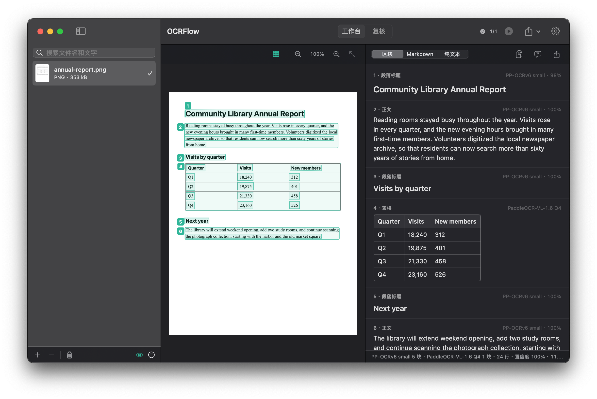

选中，就能读。
在任何应用里按下快捷键，拖出区域或点选窗口，然后在旁边的操作栏里选择：识别、长截图、保存或拷贝。
⌥⇧⌘2

这就是应用本身，正在识别一份虚构的报告。
短片
识别
继续往下滚动。这一页正随着你的滚动被读取。
版面
标题、正文、表格和公式各成一块，并按阅读顺序排好。
结果
表格还是表格，公式还是公式。校对、修改，然后导出。
阅览室全年都很热闹。每个季度的到馆人次都在增长，新开放的夜间时段吸引了许多首次办证的读者。志愿者把本地报纸档案全部数字化。
| 季度 | 到馆人次 | 新增读者 |
|---|---|---|
| Q1 | 18,240 | 312 |
| Q2 | 19,875 | 401 |
| Q3 | 21,330 | 458 |
| Q4 | 23,160 | 526 |
(23,160 − 18,240) ÷ 18,240 = 27%图书馆将延长周末开放时间，增设两间自习室，并继续扫描老照片馆藏。
截图
一套为识别而做的截图引擎。OCRFlow 不会打扰你：它从不跳到前台，你截的窗口始终保持原样。
在任何应用里按下快捷键，拖出区域或点选窗口，然后在旁边的操作栏里选择：识别、长截图、保存或拷贝。
手动滚动，或者交给自动滚动。拼接结果在页面旁边实时变长，并按页识别，小字也能保持清晰。
一次又一次拖出区域，中间不用按快捷键，照常翻页就行。按 Esc 结束。
一个小按钮浮在所有窗口之上。点按即可截图，鼠标移上去还会展开队列截图和录制操作。也可以从菜单栏开始，主窗口关着也行。
录制操作
点按、按键、输入、滚动、截图，你做过的都能重复。它不针对任何特定的应用或网站，所以哪里都能用。
比如截一张幻灯片，再按 →。之后每一步都可以修改。
按设定的次数，或者一直到屏幕不再变化，还可以依次处理一组网址。
一份文档、一张长图或多张单独的图片，结束后自动识别。也可以只保存。
智能分层
简单的地方快，复杂的地方细。你不需要自己选。
自带可靠文字的 PDF 直接使用原有文字。其余页面由版面模型划分成多个区域。
每个被标记的区域都写明原因：置信度低、输出被截断、两种读取结果不一致。你的修改不会在未询问时被覆盖。
每份文档都留在历史记录里，可以按任意词句搜索，包括中文。
合并成一个文件，或者按来源分开并保留文件夹结构。
拖入图片、PDF 或文件夹。退出后列表和结果都还在，同样的内容不会读第二遍。
放进监视文件夹的文件，复制完成后会被自动识别，结果也会替你导出。
可以用 Apple 的翻译框架，在你的 Mac 上翻译识别结果。
简体和繁体中文、英文、日文，以及 46 种拉丁字母语言，由应用内置的同一个模型读取。
韩文、阿拉伯文、西里尔文、泰文、希腊文和德瓦那加里文，可以在模型管理器里安装。
隐私
是的。OCRFlow 以 MIT 许可证开源，没有账号、订阅或使用限制。
macOS 15 Sequoia 或更高版本，支持 Apple 芯片和 Intel。每个版本都经过签名和 Apple 公证，并且可以自动更新。
69 MB 的应用本身就能识别 50 种语言的文字。处理表格、公式和复杂版面需要版面模型和精读模型，约 1 GB，要不要下载由你决定。
截图需要 macOS 的“录屏”权限。录制操作、队列截图和自动滚动还需要“辅助功能”权限，用来跟随和重复你的点按和按键。只有在录制或截图期间才会读取你的操作。
录制时输入的文字会原样保存在你 Mac 上的录制内容里，所以录制时请不要输入密码。录制和截图之外，不会读取你的任何操作。
没有。请在这里下载。它和其他 Mac 应用一样安装，并且会自动更新。